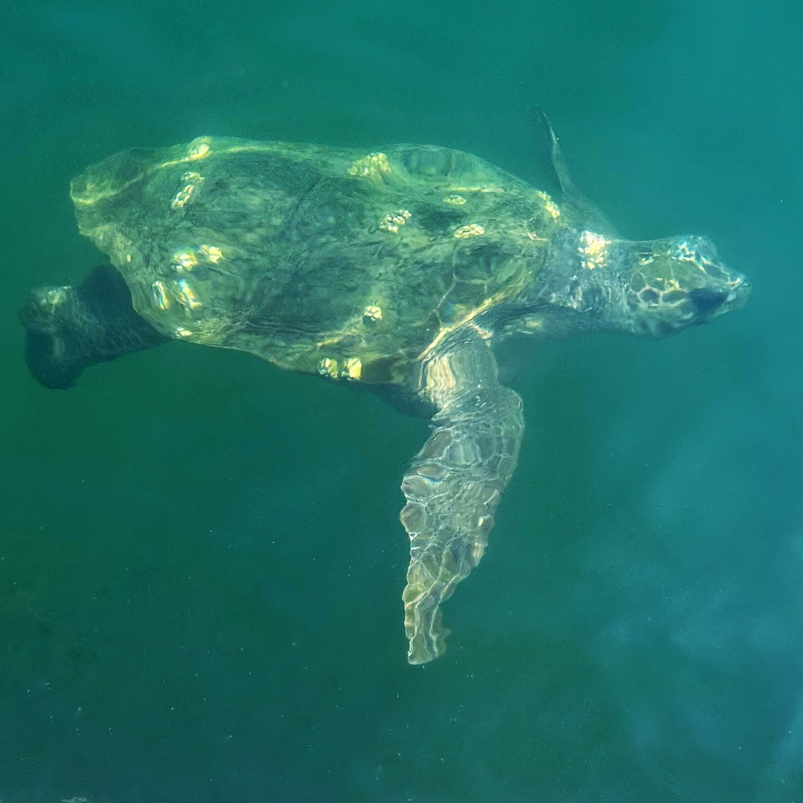
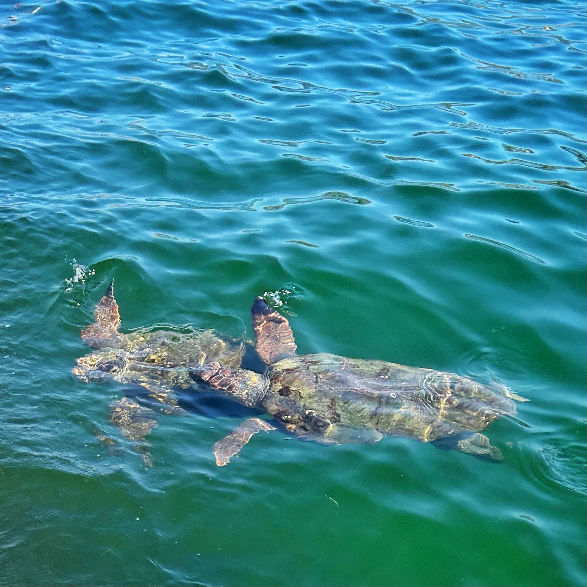
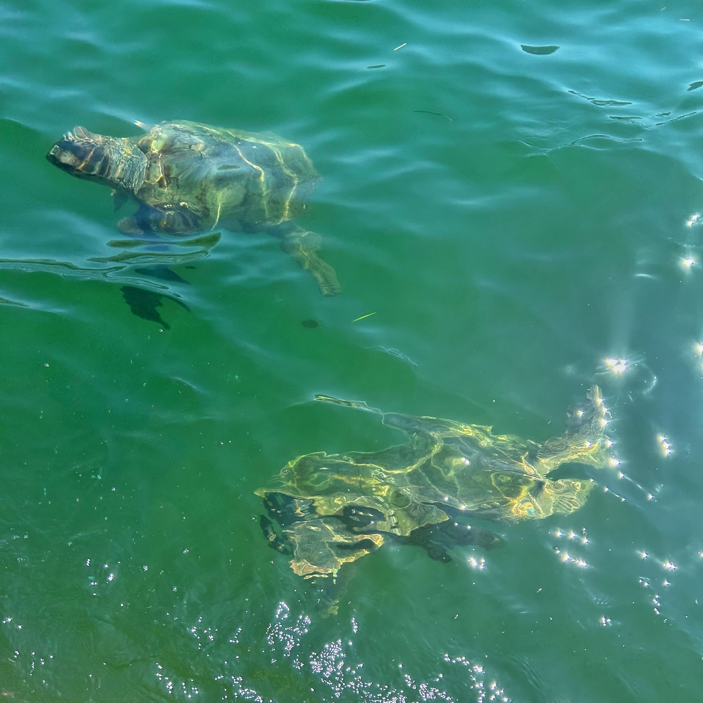
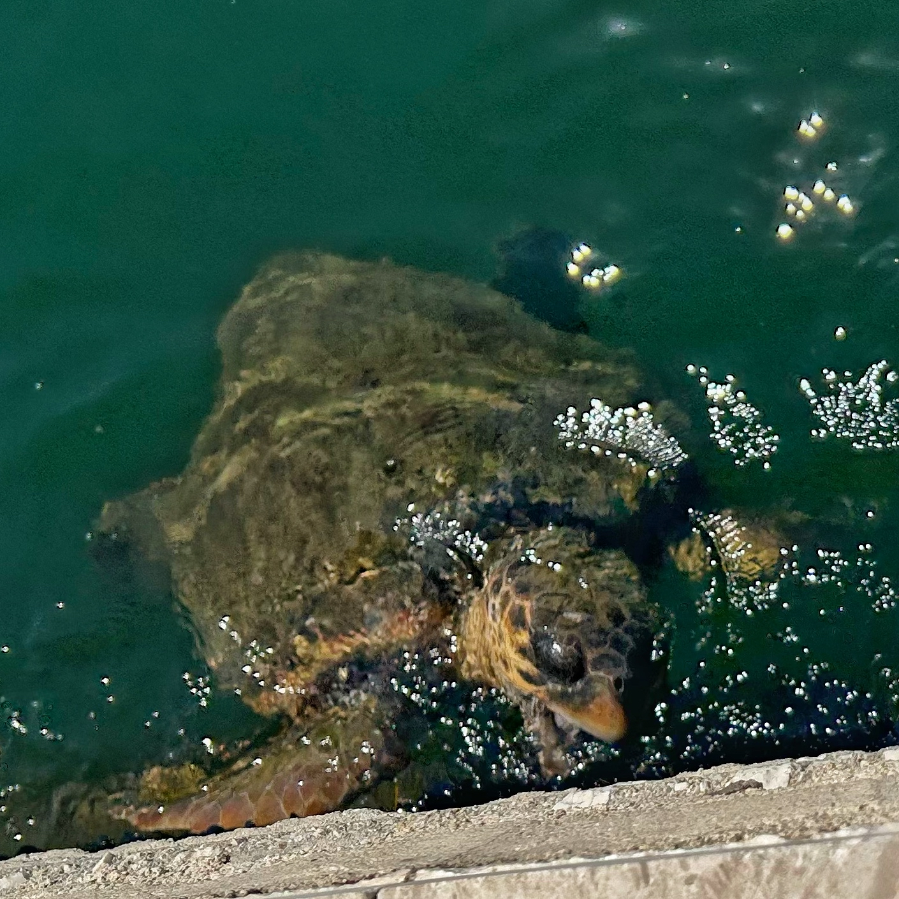
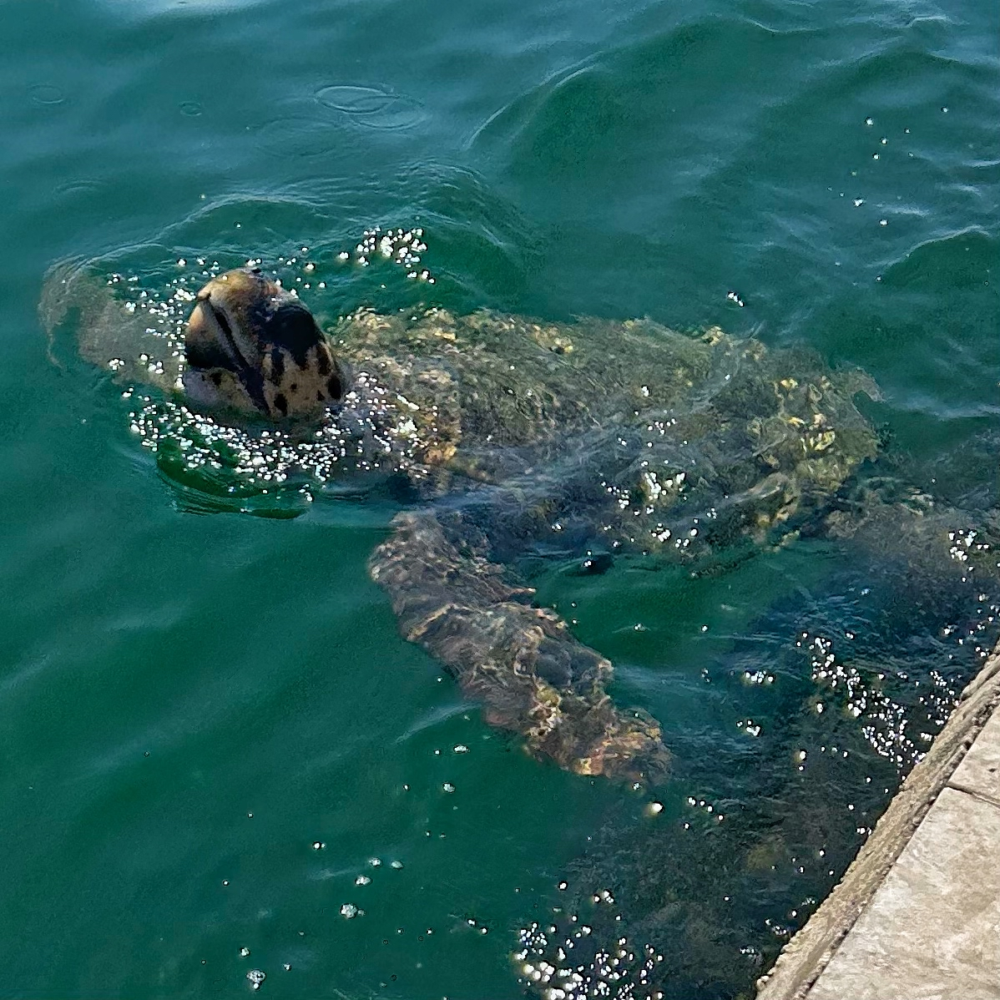
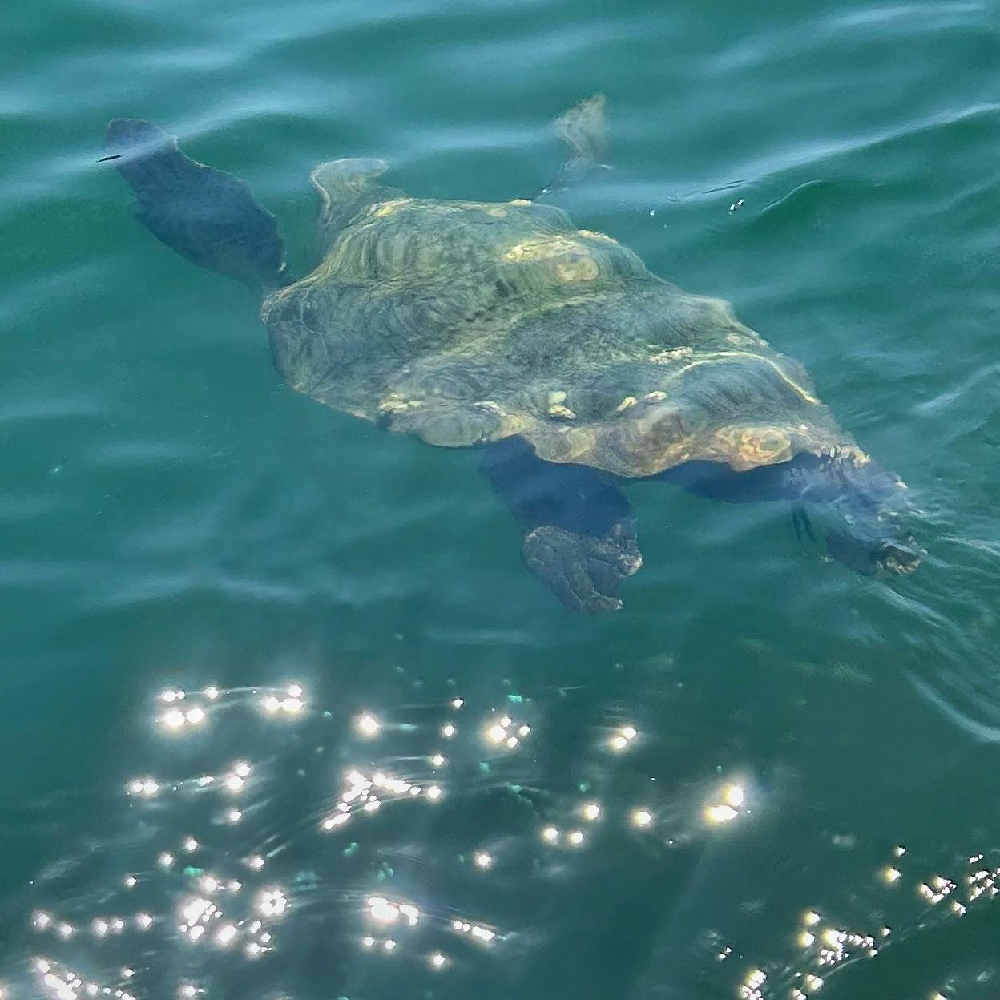

Each time we return to Kefalonia, there’s one thing my wife looks forward to above all else: seeing the sea turtles in the harbour at Argostoli. It’s become a kind of pilgrimage — part ritual, part race — through the morning heat and dust, following her urgent stride toward the fishing boats, hoping to glimpse one before they slip away beneath the water. And so far, we’ve never been disappointed.
The loggerhead turtles (Caretta caretta) that swim in Argostoli’s inner harbour are a local wonder. They’re drawn in by the returning fishing boats and the promise of scraps, gliding effortlessly between the hulls in the clear Ionian water. Some are tagged as part of conservation monitoring by Wildlife Sense, a local organisation helping protect these endangered creatures.
For my wife, seeing them is more than a tradition — it lifts her, spiritually and emotionally. Even our children, who’d much prefer a slower start to the day, have learned to accept the early walk, tolerating the rising heat and dusty path with good humour (and a bit of eye-rolling) as we keep pace behind her.
This time, I had an unexpected moment of connection. Walking alone along the harbour, I noticed a turtle swimming beside me — unhurried, companionable. It would occasionally dip under a fishing boat, then reappear again alongside me. At one point, it paused to circle with a pair of others before resuming its gentle glide.
 Eventually, we reached the stone wall at the end of the fishing market pier, where it began feeding — nibbling at algae clinging to the stone, I think. I was able to stand quietly and watch, uninterrupted, capturing a few photographs I’ll always treasure.
  As always, people gathered when they noticed — drawn in by the same wonder. But then, just as quietly, the moment resumed. The turtle and I moved on. It was a small journey, a simple one. But it felt like a privilege.
– Stuart Leach